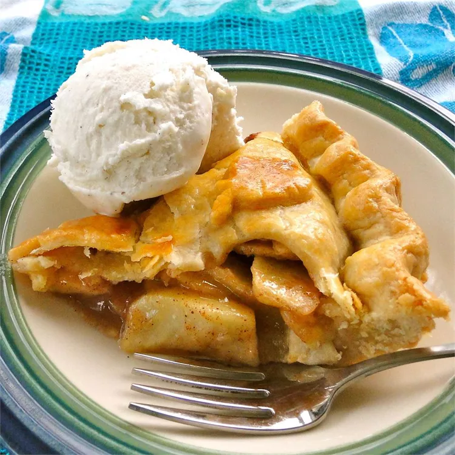

Home
Apple Pie Recipe

Image from allrecipes.com
Doesn't it just look amazing?
This one is one of my favorite desserts ever!
Ingredients
Pastry Crust
- 300 g plain flour
- 225 g unsalted butter, cold and cubed
- 1 tbsp caster sugar
- 1/2 tsp fine salt
- 60-80 ml ice water
Apple Filling
- 1 kg baking apples (e.g., Elstar, Boskoop, or Granny Smith), peeled, cored, and sliced
- 75 g caster sugar
- 50 g soft brown sugar
- 15 g cornflour
- 1 tsp ground cinnamon
- 1/4 tsp ground nutmeg
- 1 tbsp lemon juice
- 15 g butter, cubed
Egg Wash
- 1 egg whisked with 1 tbsp milk or water
Steps
Make the Pastry
- Mix flour, sugar, and salt in a bowl. Rub in cold cubed butter using fingertips until it resembles coarse breadcrumbs.
Stir in 60 ml ice water with a knife until dough comes together, adding more water 1 tsp at a time if dry. Divide into 2
discs (one slightly larger), wrap in film, and chill for 45 minutes.
Prepare the Filling
- Toss sliced apples with lemon juice, caster sugar, brown sugar, cornflour, cinnamon, and nutmeg. Let rest for 10 minutes
so apples release juices.
Bring the Pie Together
- Roll the larger dough disc on a floured surface to ~30 cm circle. Transfer to a 23 cm pie dish. Pile in apple slices,
discarding excess drained liquid, and dot with 15 g butter. Roll out second disc to cover top (or cut strips for a
lattice). Trim, crimp edges to seal, and cut steam vents on top.
Bake
- Brush top with egg wash. Bake at 200°C (180°C fan) for 20 minutes. Lower heat to 180°C (160°C fan) and bake for another
30 minutes until crust is golden and juices bubble. Cool for at least 2 hours before slicing.
All done!
Aaand it's ready to be devoured, dig in!